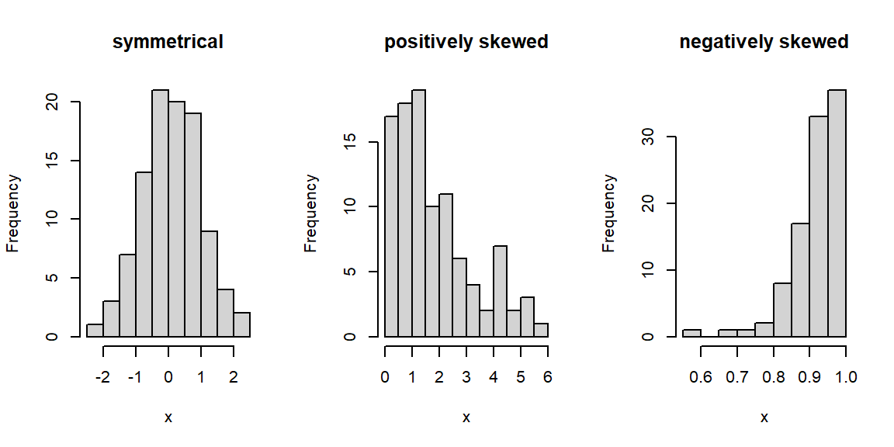
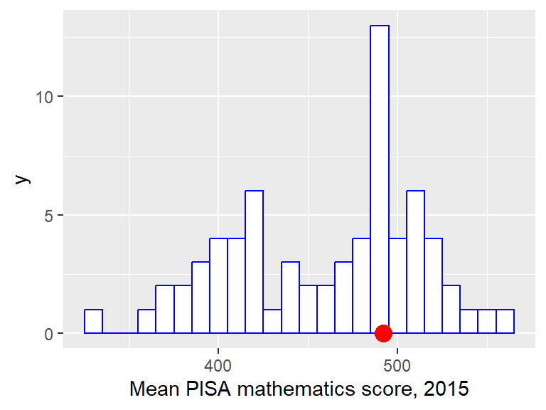
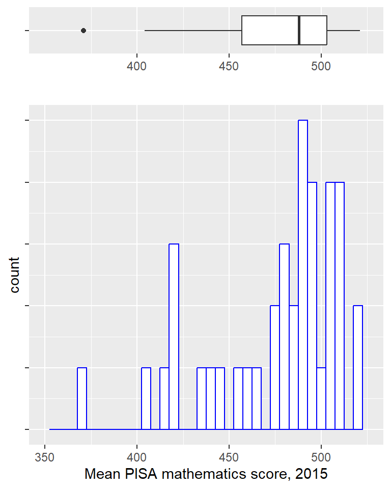
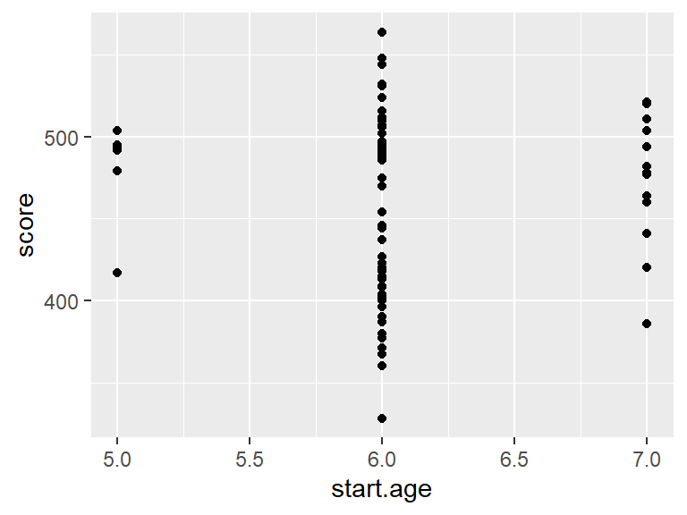
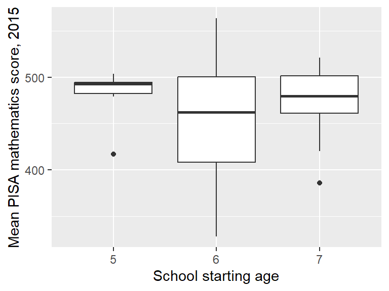
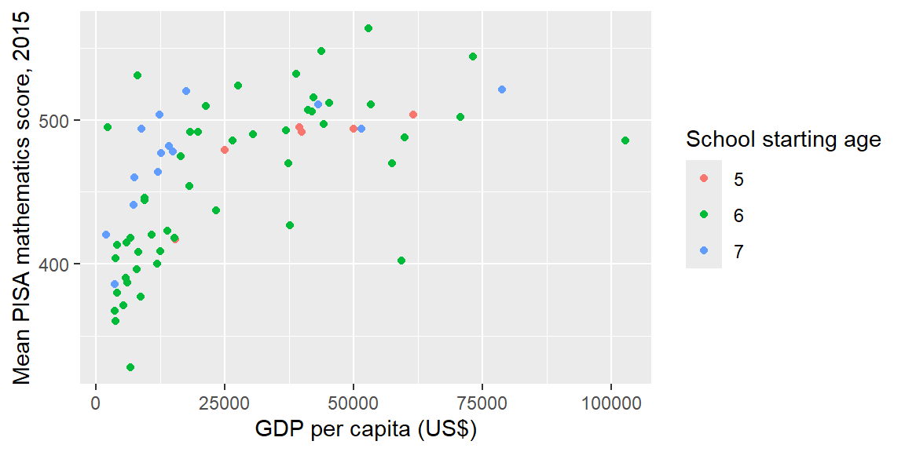

Chapter 1 Exploratory Data Analysis using R
In this chapter we study how to extract information from a data set using various plots and summary statistics. (We will do more formal statistical modelling and analysis in later chapters). We will study how to handle data sets in R and how to produce various plots.
1.1 Case study: what makes a country good at maths?
Every few years, the Organisation for Economic Co-operation and Development (OECD) conducts a survey, known as the Programme of International Student Assessment (PISA), to compare school systems across different countries. In the 2015 survey, 72 countries (including the UK) were compared, and about half a million 15-year-old children took tests in reading, mathematics and science. Two questions we may wish to consider are
- how does the UK compare with other countries?
- Are there factors that could explain why some countries do better than others?
The PISA data can be obtained from (http://pisadataexplorer.oecd.org/ide/idepisa/). To consider the second question, we will explore some of the data available from the World Bank
A spreadsheet maths.csv (which you can download here) has been compiled from these sources, and gives five variables for each country
score: the mean mathematics score in the 2015 PISA test;gdp: the gross domestic product per capita (GDP divided by the estimated population size), measured in US\(\$\);gini: the gini coefficient (as a percentage). This is an estimate of income inequality, with larger values indicating more income inequality;homework: an estimate of the average number of hours per week spent on homework by 15 year-olds, from a survey in 2012;start.age: the age (in years) in which children start school.
In the remainder of this chapter, we will see how an exploratory data analysis can be used to extract information from our data, to help answer the two questions above.
1.2 The “Tidyverse”
The Tidyverse is a collection of R packages designed for data science.
 (Artwork by @allison_horst)
(Artwork by @allison_horst)
We will be using some of these packages (in particular, a package for data manipulation called dplyr, and a package for graphics called ggplot2) in this course. You will need to install it with the command
You only need to do this once, but every session, you will need to load it with the command
1.3 Importing data into R: csv and .xlsx files
The data are in “comma separated variables” (csv) format, so we can use the command read_csv to get the data into R. (The file maths.csv will need to be in your working directory. You can change the working directory in RStudio by going to Session > Set Working Directory).
The data are now stored in R in an object called maths. All commands and names in R are case-sensitive: R won’t recognise the name Maths.
In R, you can read in files directly from websites. If you are working through this chapter on your own, and want to try out all the commands, you will either need to download the file maths.csv first, or you can import it directly with the command
1.3.1 Importing Excel .xlsx files
If your data is an Excel spreadsheet in .xlsx format, you can either save it in Excel as a .csv file, or you can use the read_xlsx() command (for which you will need to load the readxl package first). For example, to import a file spreadsheet.xlsx, you would use the command
1.4 Data frames and tibbles in R
maths is a type of object known as a data frame, which is the main way of organising data in R. In fact, it’s actually a special type of data frame known as a “tibble”. We’ll always be using tibbles rather than ordinary data frames here, but we won’t worry too much about the difference.
The data are arranged in the data frame as they were in the .csv file, with one row per country, and one column per variable. Typing maths (and pressing return) in the R console will display the first ten rows only, and as many columns as will fit in the window.
## # A tibble: 70 × 7
## country continent score gdp gini homework start.age
## <chr> <chr> <dbl> <dbl> <dbl> <dbl> <dbl>
## 1 Albania Europe 413 4147 29 5.1 6
## 2 Algeria Africa 360 3844 27.6 NA 6
## 3 Argentina South America 409 12449 42.7 3.7 6
## 4 Australia Oceanea 494 49928 34.7 6 5
## 5 Austria Europe 497 44177 30.5 4.5 6
## 6 B-S-J-G (China) Asia 531 8123 42.2 13.8 6
## 7 Belgium Europe 507 41096 28.1 5.5 6
## 8 Brazil South America 377 8650 51.3 3.3 6
## 9 Bulgaria Europe 441 7351 37.4 5.6 7
## 10 Canada North America 516 42158 34 5.5 6
## # ℹ 60 more rowsWithin the data frame, we see that the column names are country, continent, score, gdp, gini, homework and start.age, which we will use in various commands described shortly.
If we want to see all 70 rows, we can either use the command
or, in RStudio, we can click on maths in the Environment window.
1.4.1 Ordering the rows by a variable with the arrange() command
Suppose we want to see which countries got the highest score: we want to arrange the rows in the dataframe maths in order according to the values in the column score. To do this we use the command
## # A tibble: 70 × 7
## country continent score gdp gini homework start.age
## <chr> <chr> <dbl> <dbl> <dbl> <dbl> <dbl>
## 1 Dominican Republic North America 328 6722 44.9 NA 6
## 2 Algeria Africa 360 3844 27.6 NA 6
## 3 Tunisia Africa 367 3689 35.8 3.5 6
## 4 Macedonia, FYR Europe 371 5237 35.6 NA 6
## 5 Brazil South America 377 8650 51.3 3.3 6
## 6 Jordan Asia 380 4088 33.7 4.2 6
## 7 Indonesia Asia 386 3570 39.5 4.9 7
## 8 Peru South America 387 6046 44.3 5.5 6
## 9 Colombia South America 390 5806 51.1 5.3 6
## 10 Lebanon Asia 396 7914 31.8 3.3 6
## # ℹ 60 more rowsThis has arranged the rows in ascending order of score. To see them in descending order, we include the desc() command:
## # A tibble: 70 × 7
## country continent score gdp gini homework start.age
## <chr> <chr> <dbl> <dbl> <dbl> <dbl> <dbl>
## 1 Singapore Asia 564 52961 NA 9.4 6
## 2 Hong Kong SAR, China Asia 548 43681 NA 6 6
## 3 Macao SAR, China Asia 544 73187 NA 5.9 6
## 4 Japan Asia 532 38894 32.1 3.8 6
## 5 B-S-J-G (China) Asia 531 8123 42.2 13.8 6
## 6 Korea, Rep. Asia 524 27539 31.6 2.9 6
## 7 Switzerland Europe 521 78813 32.5 4 7
## 8 Estonia Europe 520 17575 34.6 6.9 7
## 9 Canada North America 516 42158 34 5.5 6
## 10 Netherlands Europe 512 45295 28.6 5.8 6
## # ℹ 60 more rows(Just by sorting the data, we can see something interesting: look at the continent variable for the highest scoring countries.)
1.4.2 Selecting rows with the filter() command
If we want to view a subset of the rows, we can use the filter() command. For example, if we want the rows in the data frame maths where start.age takes the value 5 (i.e. children start school at age 5), we can do
## # A tibble: 6 × 7
## country continent score gdp gini homework start.age
## <chr> <chr> <dbl> <dbl> <dbl> <dbl> <dbl>
## 1 Australia Oceanea 494 49928 34.7 6 5
## 2 Ireland Europe 504 61606 31.9 7.3 5
## 3 Malta Europe 479 25058 NA NA 5
## 4 New Zealand Oceanea 495 39427 NA 4.2 5
## 5 Trinidad and Tobago North America 417 15377 40.3 NA 5
## 6 United Kingdom Europe 492 39899 34.1 4.9 5Note the double equals sign ==. This is used to test whether the left and right hand sides are equal: each country is included if its corresponding start.age is equal to 5.
The UK is included above, but we’ll give an example of selecting it anyway:
## # A tibble: 1 × 7
## country continent score gdp gini homework start.age
## <chr> <chr> <dbl> <dbl> <dbl> <dbl> <dbl>
## 1 United Kingdom Europe 492 39899 34.1 4.9 51.4.3 Viewing and extracting data from a column
For larger data frames (with many columns), we may wish to view a subset only. For example, to select the score and country columns only from the maths data frame, we do
## # A tibble: 70 × 2
## score country
## <dbl> <chr>
## 1 413 Albania
## 2 360 Algeria
## 3 409 Argentina
## 4 494 Australia
## 5 497 Austria
## 6 531 B-S-J-G (China)
## 7 507 Belgium
## 8 377 Brazil
## 9 441 Bulgaria
## 10 516 Canada
## # ℹ 60 more rowsIf we want to extract the values from a column, we use the syntax dataframe-name$column-name. For example, to extract the column score from the data frame maths, we do
## [1] 413 360 409 494 497 531 507 377 441 516 423 390 400 464 437 492 511 328 520
## [20] 511 493 404 506 454 548 477 488 386 504 470 490 532 380 460 524 482 396 478
## [39] 486 544 371 446 479 408 420 418 512 495 502 387 504 492 402 444 494 564 475
## [58] 510 486 494 521 415 417 367 420 427 492 470 418 495We could then, for example, calculate the average (mean) of all the scores:
## [1] 460.97141.4.4 Creating new columns in a data frame with the mutate() command
About half the countries have a GDP per capita greater than $17000. If we try the command
## [1] FALSE FALSE FALSE TRUE TRUE FALSE TRUE FALSE FALSE TRUE FALSE FALSE
## [13] FALSE FALSE TRUE TRUE TRUE FALSE TRUE TRUE TRUE FALSE TRUE TRUE
## [25] TRUE FALSE TRUE FALSE TRUE TRUE TRUE TRUE FALSE FALSE TRUE FALSE
## [37] FALSE FALSE TRUE TRUE FALSE FALSE TRUE FALSE FALSE FALSE TRUE TRUE
## [49] TRUE FALSE FALSE TRUE TRUE FALSE FALSE TRUE FALSE TRUE TRUE TRUE
## [61] TRUE FALSE FALSE FALSE FALSE TRUE TRUE TRUE FALSE FALSEthis creates a new vector, in which the \(i\)th element will be TRUE if the gdp value for country \(i\) is greater than 17000, and FALSE otherwise. We will add this vector to the data frame, under the column name wealthiest. The command to create the new column is
but this doesn’t store the result. To put the new column in the maths dataframe, we do
You may now have too many columns to see in your console, so to check this has worked, we will do
## # A tibble: 70 × 3
## country gdp wealthiest
## <chr> <dbl> <lgl>
## 1 Albania 4147 FALSE
## 2 Algeria 3844 FALSE
## 3 Argentina 12449 FALSE
## 4 Australia 49928 TRUE
## 5 Austria 44177 TRUE
## 6 B-S-J-G (China) 8123 FALSE
## 7 Belgium 41096 TRUE
## 8 Brazil 8650 FALSE
## 9 Bulgaria 7351 FALSE
## 10 Canada 42158 TRUE
## # ℹ 60 more rows1.4.5 Chaining commands together with the pipe operator %>%
We’ve been making use of the ‘pipe operator’ %>%, which we will now discuss a little more. The pipe operator %>% takes whatever the output is from the left hand side, and uses it as the first argument in the function on the next line. In general,
is the same as
so, for example,
is the same as filter(maths, continent == "Europe").
The %>% syntax can be easier to read when we want to chain several functions together. Suppose we want to see the top 10 countries by score, within Europe. This will involve using both the arrange() and filter() commands. We can chain these together as follows
## # A tibble: 39 × 8
## country continent score gdp gini homework start.age wealthiest
## <chr> <chr> <dbl> <dbl> <dbl> <dbl> <dbl> <lgl>
## 1 Switzerland Europe 521 78813 32.5 4 7 TRUE
## 2 Estonia Europe 520 17575 34.6 6.9 7 TRUE
## 3 Netherlands Europe 512 45295 28.6 5.8 6 TRUE
## 4 Denmark Europe 511 53418 28.5 4.3 6 TRUE
## 5 Finland Europe 511 43090 26.8 2.8 7 TRUE
## 6 Slovenia Europe 510 21305 25.7 3.7 6 TRUE
## 7 Belgium Europe 507 41096 28.1 5.5 6 TRUE
## 8 Germany Europe 506 41936 31.4 4.7 6 TRUE
## 9 Ireland Europe 504 61606 31.9 7.3 5 TRUE
## 10 Poland Europe 504 12372 32.1 6.6 7 FALSE
## # ℹ 29 more rowsWe read this as, “Start with the maths data set, filter it to extract the European countries, then arrange in order of decreasing scores.” The code above could be written as
but a single (and potentially long) line of code such as this can be harder to read and understand.
1.5 Calculating summary statistics with the summary() command
We can now start to compare the UK’s score with that in other countries. Recall that maths$score extracts the maths scores for the 70 countries. We can obtain various summary statistics for this variable with the command
## Min. 1st Qu. Median Mean 3rd Qu. Max.
## 328.0 417.2 477.5 461.0 500.8 564.0We’ll need a few definitions to interpret some of this output.
Definition 1.1 (Percentile/Quantile) Given a set of (real-valued) observations, for any \(\alpha \in [0,1]\), the \(\alpha\) quantile or 100\(\alpha\) percentile is a value where (approximately) 100\(\alpha\%\) of the observations are below this value, and the remainder are above.
So, for example,
- the 25th percentile, or 0.25 quantile, is 417.2: approximately 25% of the countries have scores less than (or equal to) 417.2;
- the 75th percentile, or 0.75 quantile, is 500.8: approximately 75% of the countries have scores less than (or equal to) 500.8.
(There are different algorithms for obtaining the value of percentile/quantile, for example using linear interpolation, but we won’t worry with the details here.)
Definition 1.2 (Median and quartiles) The median is the 50th percentile/0.5 quantile. The lower quartile is the 25th percentile/0.25 quantile, and the upper quartile is the 75th percentile/0.75 quantile.
The output from the summary() command also tells us that
- the smallest observed score was 328;
- the median score was 477.5;
- the arithmetic mean (sum of all the scores, divided by 70) for the 70 countries was 461;
- the largest observed score was 564.
Definition 1.3 (The interquartile range) The interquartile range is the difference between the 75th percentile (0.75 quantile) and 25th percentile (0.25 quantile), and is sometimes used to describe variation in data.
The interquartile range can be obtained in R with the command
## [1] 83.5We’ve seen that the UK’s score was 492. This ranks the UK outside the top 25%, but inside the top 50%. We can find the actual rank as follows:
## [1] 25This tells us that the UK ranked 26th: 25 countries got higher scores.
1.5.1 Calculating individual summary statistics
Individually, we could have calculated these summaries as follows
## [1] 328## 25%
## 417.25## 50%
## 477.5## [1] 460.9714## 75%
## 500.75## [1] 564This may be more convenient if we just want a particular summary statistic, and/or want to store the result for use later on.
1.5.2 Calculating other quantiles/percentiles
If we wanted, say, the 90th percentile (0.9 quantile), we could do
## 90%
## 520.1so that, approximately, 90% of the countries has scores less than or equal to 520.1
1.5.3 Computing summaries per group
Suppose we want to know the mean score within particular groups, for example, continents. We can do this by chaining together the group_by() and summarise() commands.
## # A tibble: 6 × 2
## continent meanscore
## <chr> <dbl>
## 1 Africa 364.
## 2 Asia 471.
## 3 Europe 476.
## 4 North America 423.
## 5 Oceanea 494.
## 6 South America 401.We read the command as, “Start with the maths data frame, organise into groups based on the continent column, then create a new variable called meanscore, which is the mean of the score variable within each group.”
1.6 Plotting a distribution using a histogram
We’ve seen that 25 countries got higher scores than the UK, but perhaps some of these were only just higher, so that the just looking at ranks can be misleading. We can plot the distribution of scores using a histogram.
Definition 1.4 (Histogram) A histogram is a bar chart, where the area of each bar is proportional to the number of observations lying in the interval indicated by the bar. Each interval is known as a bin. If the bars are all of equal width (which is recommended), then the height of the bar is normally either the number of observations in the corresponding bin, or the proportion of the total number that lie in that bin.
1.6.1 Describing the shape of a distribution: skewness
From a histogram plot, we sometimes refer to a distribution as being (approximately) symmetrical, positively skewed, or negatively skewed. Some examples are below.

Starting from the peak of a distribution, a positively skewed distribution extends further to the right than to the left, and vice-versa for a negatively skewed distribution. Note that in a positively skewed distribution, the mean is greater than the median, and vice-versa for a negatively skewed distribution.
1.7 Introducing ggplot2
We’ll be using the R package ggplot2 to produce all our plots. ggplot2 is a popular and versatile package for producing a wide range of plots.
 (Artwork by @allison_horst)
(Artwork by @allison_horst)
Everything you need for this module is included in these notes, but there are lots of good online resources too:
ggplot2 is included in the tidyverse package, so we don’t need to install or load it separately.
1.8 Drawing a histogram in R
We can produce a basic histogram as follows

This is really a single command, spread over two lines, using the + symbol to carry over the command from one line to the next year. The command works as follows.
- The first line
ggplot(data = maths, aes(x = score))sets up the axes, and tells R that we will be plotting data from themathsdataframe, with the dataframe columnscorerepresented on the \(x\)-axis. - The second line
geom_histogram()tells R to draw a histogram for the axes specified in the first line.
When producing any plot with ggplot2, any command
involving a column in a dataframe needs to go inside an
aes() command (e.g., aes(x = score)). This can
take a little getting used to, but you will see more examples later
on.
1.8.1 Customising a histogram plot in R
We’ll redraw the plot with different colours, add a better axis label, specify a histogram bin-width of size 10, and indicate the UK’s score with a red dot:
ggplot(data = maths, aes(x = score)) +
geom_histogram(colour = "blue", fill = "white", binwidth = 10) +
labs(x = "Mean PISA mathematics score, 2015") +
annotate("point", x = 492, y = 0, size = 4, colour = "red") 
Note that the + symbol at the end of the first three lines tells R to treat all four lines as a single command.
- The second line now includes extra arguments:
fillsets the colour of the interior of the bars, andcoloursets the colour of the bar edges.binwidthsets how wide each bar is on the \(x\)-axis; - the third line (
labs) specifies the label on the \(x\)-axis; - the fourth line (
annotate) draws a red circle at the coordinates \(x=492, y=0\), andsize = 4increases the size of the circle (the default value forsizeis 1.)
Now we can see that quite a few countries got scores close to the UK’s, so that there’s not necessarily much to distinguish countries, even if they are, say, 10 places apart in the rankings.
1.9 Covariance and correlation
Let’s first consider the relationship between the maths score and GDP per capita. For the \(i\)-th country, let \(x_i\) be its maths score and \(y_i\) its GDP per capita, for \(i=1,\ldots,70\). Looking at the first few rows of the data
## # A tibble: 6 × 8
## country continent score gdp gini homework start.age wealthiest
## <chr> <chr> <dbl> <dbl> <dbl> <dbl> <dbl> <lgl>
## 1 Albania Europe 413 4147 29 5.1 6 FALSE
## 2 Algeria Africa 360 3844 27.6 NA 6 FALSE
## 3 Argentina South America 409 12449 42.7 3.7 6 FALSE
## 4 Australia Oceanea 494 49928 34.7 6 5 TRUE
## 5 Austria Europe 497 44177 30.5 4.5 6 TRUE
## 6 B-S-J-G (China) Asia 531 8123 42.2 13.8 6 FALSEso we have paired observations \((x_1=413, y_1=4147)\), \((x_2=360, y_2=3844)\), \((x_3=409, y_3=12449)\) and so on.
Definition 1.5 (Covariance) For pairs of observations \((x_1,y_1), (x_2, y_2),\ldots,(x_n,y_n)\) we define their covariance to be \[ s_{xy}=\frac{1}{n-1}\sum_{i=1}^n(x_i - \bar{x})(y_i - \bar{y}), \] where \(\bar{x} = \frac{1}{n}\sum_{i=1}^n x_i\) and \(\bar{y} = \frac{1}{n}\sum_{i=1}^n y_i\).
1.9.1 Calculating a covariance in R
In R, we can use the command cov():
## [1] 710058.9and so \(s_{xy} = 710058.9\) to 1 d.p.
1.9.2 Pearson’s correlation coefficient
Covariances aren’t very informative on their own, as they will depend on the scale of measurement of the variables. Correlation coefficients are scale independent. There are different versions of the correlation coefficient.
Definition 1.6 (Pearson's correlation coefficient) For pairs of observations \((x_1,y_1), (x_2, y_2),\ldots,(x_n,y_n)\) we define Pearson’s correlation coeffcient to be \[ r_{xy}=\frac{s_{xy}}{s_xs_y}, \] with \(s_{xy}\) the covariance defined above, and \[ s_x = \sqrt{\frac{1}{n-1}\sum_{i=1}^n(x_i - \bar{x})^2}, \] \[ s_y = \sqrt{\frac{1}{n-1}\sum_{i=1}^n(y_i - \bar{y})^2} \]
Pearson’s correlation coefficient measures the strength of the linear association between the two variables, and is bounded between -1 and 1. A positive correlation implies that as one quantity increases, the other is expected to increase, and a negative correlation implies that as one quantity increases, the other is expected to decrease.
1.9.3 Calculating Pearson’s correlation coefficient in R
To calculate Pearson’s correlation coefficient between the variables score and gdp in the data frame maths, we use the command
## [1] 0.5947452and so \(r_{xy}=0.59\) to 2 d.p. We will discuss interpreting correlation coefficients shortly, but for now, we will just comment that this value is fairly large, and certainly suggests a relationship between the two variables.
1.9.4 Spearman’s correlation coefficient
An alternative to Pearson’s correlation coefficient is Spearman’s correlation coefficient.Definition 1.7 (Spearman's correlation coefficient) For pairs of observations \((x_1,y_1), (x_2, y_2),\ldots,(x_n,y_n)\) we define Spearman’s correlation coefficient to be Pearson’s correlation coefficient calculated on the the ranks of observations.
1.9.4.1 Example
For illustration, suppose we have the following data
| \(i\) | 1 | 2 | 3 | 4 | 5 | 6 |
|---|---|---|---|---|---|---|
| \(x_i\) | 68 | 2 | 40 | 20 | 85 | 97 |
| \(y_i\) | 73 | 26 | 37 | 1 | 63 | 68 |
We first calculate the ranks of the observations (if \(x_i\) gets a rank of 1, it means \(x_i\) was the smallest out of \(x_1,\ldots,x_n\)):
| \(i\) | 1 | 2 | 3 | 4 | 5 | 6 |
|---|---|---|---|---|---|---|
| rank(\(x_i\)) | 4 | 1 | 3 | 2 | 5 | 6 |
| rank(\(y_i\)) | 6 | 2 | 3 | 1 | 4 | 5 |
We then calculate Pearson’s correlation coefficient on the ranks, as if we have six pairs of observations (4, 6), (1, 2), \(\ldots\) (6, 5).
1.9.5 Calculating Spearman’s correlation coefficient in R
In R, we just include an extra argument in the cor() command:
## [1] 0.7714286(If we don’t specify a method, the default is to use Pearson’s). To illustrate that this is just Pearson’s correlation coefficient calculate on the ranks, we can obtain the rankings in R with the command rank(), and then compare the above with
## [1] 4 1 3 2 5 6## [1] 6 2 3 1 4 5## [1] 0.77142861.9.6 Interpreting correlation coefficients
To help interpret and visualise correlation coefficients, four examples are plotted in Figure 1.1.
![Correlation coefficients and linear trends. In (a), the correlation is quite large, even though there is fair amount of 'random variation' in the data. In (b), the two variables were generated independently, but still resulted in a Pearson correlation of -0.19: 'moderate' correlation values can be observed purely by luck. In (c), $x$ and $y$ are clearly related, but the Pearson correlation is 0: there is no \textit{linear} trend. In (d), the relationship between $x$ and $y$ is monotone, but nonlinear, and the Spearman correlation is greater than Pearson's.](MPS114-Data-Science_files/figure-html/plot-correlation-1.png)
Figure 1.1: Correlation coefficients and linear trends. In (a), the correlation is quite large, even though there is fair amount of ‘random variation’ in the data. In (b), the two variables were generated independently, but still resulted in a Pearson correlation of -0.19: ‘moderate’ correlation values can be observed purely by luck. In (c), \(x\) and \(y\) are clearly related, but the Pearson correlation is 0: there is no trend. In (d), the relationship between \(x\) and \(y\) is monotone, but nonlinear, and the Spearman correlation is greater than Pearson’s.
1.9.7 Correlations for the maths data set
We calculate the Pearson correlations between the variables of interest:
maths %>%
na.omit() %>%
select(score, gdp, homework, start.age, gini) %>%
cor(method = "pearson") %>%
round(2)- the second line excludes any rows with missing values (the
cor()command won’t work otherwise); - the third line selects the columns for which we wish to calculate correlations;
- the fourth line will produce a matrix of Pearson correlations, in the form above;
- the fifth line rounds all the numbers to two decimal places.
The code above produces the following output.
## score gdp homework start.age gini
## score 1.00 0.58 0.26 0.06 -0.56
## gdp 0.58 1.00 -0.14 -0.19 -0.40
## homework 0.26 -0.14 1.00 0.13 0.07
## start.age 0.06 -0.19 0.13 1.00 -0.11
## gini -0.56 -0.40 0.07 -0.11 1.00(Note that the correlation of any variable with itself is always 1). By looking at the largest correlations (in absolute value), tentatively, we may conclude the following:
- countries with larger GDP per capita tend to have higher maths scores (correlation of 0.58);
- countries with more inequality tend to have lower maths scores (correlation of -0.56);
- the association between hours of homework per week and maths score looks weak (correlation of 0.26);
- there doesn’t appear to be much of a linear association between school starting age and maths score (correlation of 0.06).
(The correlations are all fairly similar if we use Spearman’s correlation instead). We will check these visually shortly. There is one complication, however: countries with higher GDP per capita tend to have less inequality (correlation of -0.4). Could this be the reason countries with more inequality tend to have lower maths scores?
1.10 Drawing a scatter plot in R
Let’s first plot maths score against GDP per capita:
 Again, although there are two lines, with the
Again, although there are two lines, with the + symbol, this is really just one command.
- The first line
ggplot(data = maths, aes(x = gdp, y = score))sets up the axes, and tells R that we will be plotting data from themathsdataframe, with the dataframe columngdprepresented on the \(x\)-axis, and the columnscorerepresented on the \(y\)-axis. - Both
gdpandscoreare columns in a data frame, so they are used inside anaes()command here. - The second line
geom_point()tells R to draw a scatter plot for the axes specified in the first line.
1.10.1 Customising a scatter plot in R
We will tidy up the plot by specifying proper axes labels, and labeling the UK. Here, the simplest way to do it is to manually add another point.
ggplot(data = maths, aes(x = gdp, y = score)) +
geom_point() +
labs(x = "GDP per capita (US$)", y = "Mean PISA mathematics score, 2015") +
annotate("point", x = 39899, y = 492, colour = "red", size = 2) +
annotate("text", label = "UK", x = 39899, y = 492, colour = "red",
hjust = -0.2, vjust = 1) Note that you can break up long lines of code after a comma
Note that you can break up long lines of code after a comma , which makes your code easier to read.
- The third line (
labs) specifies labels for both the \(x\)-axis and \(y\)-axis; - the fourth line adds a red circle (
"point") at the coordinates \(x=39899\), \(y=492\) (corresponding to the UK), with thesizeset to 2 to make it a little larger. - the fifth line adds some red text (UK) at the coordinates \(x=39899\), \(y=492\), with the arguments
hjustandvjustshifting the text slightly horizontally and vertically, so that it appears next to, rather than on top of the red dot. It can take a little trial and error to find the values forhjustandvjustthat you are happy with.
1.10.2 Adding a nonlinear trend to a scatter plot in R
We can see clearly that maths scores tend to increase as GDP per capita increases, but the relationship doesn’t look linear. If we want to emphasise such a relationship, we can add the trend to the plot, using the extra line geom_smooth() in the plot command:
ggplot(data = maths, aes(x = gdp, y = score)) +
geom_point() +
labs(x = "GDP per capita (US$)",
y = "Mean PISA mathematics score, 2015") +
annotate("point", x = 39899,
y = 492, colour = "red",
size = 2) +
annotate("text", label = "UK",
x = 39899, y = 492,
colour = "red",
hjust = -0.2, vjust = 1) +
geom_smooth() The blue line shows the estimated trend. The grey shaded area indicates uncertainty about this trend: it’s wider on the right hand side, because we have less data there. (You can learn more about how this is all done in MPS235).
The blue line shows the estimated trend. The grey shaded area indicates uncertainty about this trend: it’s wider on the right hand side, because we have less data there. (You can learn more about how this is all done in MPS235).
1.10.3 Adding a linear trend to a scatter plot in R
To include a linear trend, we add the argument method = "lm" to geom_smooth():
ggplot(data = maths,
aes(x = gini, y = score)) +
geom_point() +
geom_smooth(method = "lm") +
labs(x = "Gini coeffcient",
y = "Mean PISA mathematics score, 2015") 
The grey shaded region represents uncertainty in the trend. We’ll do the same for the homework variable.
ggplot(data = maths,
aes(x = homework, y = score)) +
geom_point() +
geom_smooth(method = "lm") +
labs(x = "Mean hours of homework per week")+
labs(y = "Mean PISA mathematics score, 2015") 
1.11 Box plots
If we want to compare groups of observations, we can use a box plot. Box plots are useful for comparing several groups simultaneously: we can fit a lot of information into a single plot. To explain how to interpret a box plot, we’ll first consider the European countries only, and show a box plot directly above a histogram of the same data.

In the box plot above:
- the thick vertical black line shows the median;
- the ends of the box show the 25th and 75th percentiles (so that the box shows the interquartile range);
- the two horizontal lines (known as “whiskers”) extend to the most extreme observed values that are no more than 1.5 \(\times\) the inter-quartile range from the edge of the box;
- individual observations not covered by the whiskers are shown as points on the plot, referred to as outliers.
Lining up the box plot with the histogram, we can see that it gives an indication of the shape of the distribution.
We’ll now produce a box plot (drawn vertically instead of horizontally) to compare maths scores between the continents.
ggplot(data = maths, aes(x = continent, y = score)) +
geom_boxplot() +
labs(y = "Mean PISA mathematics score, 2015") 
- The first line
ggplot(data = maths, aes(x = continent, y = score))sets up the axes, and tells R that we will be plotting data from themathsdataframe, with the dataframe columncontinentrepresented on the \(x\)-axis, and the columnscorerepresented on the \(y\)-axis. - The second line
geom_boxplot()tells R to draw a box plot for the axes specified in the first line.
If we have long names on the \(x\)-axis, we may need to rotate them. We can do this as with an extra line at the end (which will rotate and shift the text slightly):
ggplot(data = maths, aes(x = continent, y = score)) +
geom_boxplot() +
labs(y = "Mean PISA mathematics score, 2015") +
theme(axis.text.x=element_text(angle = 90,
hjust = 1,
vjust = 0.5))
Let’s now investigate the relationship between maths score and school starting age:

The problem here is that there are only three distinct starting ages: 5, 6 and 7, so the scatter plot isn’t very clear. A box plot might work better: we think of the three starting ages as three groups. In R, we have to convert start.age to a factor variable. If we try the following command
## [1] 6 6 6 5 6 6 6 6 7 6 6 6 6 7 6 6 6 6 7 7 6 6 6 6 6 7 6 7 5 6 6 6 6 7 6 7 6 7
## [39] 6 6 6 6 5 6 7 6 6 5 6 6 7 6 6 6 7 6 6 6 6 7 7 6 5 6 6 6 5 6 6 6
## Levels: 5 6 7this doesn’t appear to have done anything, but the text Levels: 5 6 7 at the bottom tells us that the output is a factor variable, taking one of three levels. We can try the box plot, where on the \(x\)-axis, we specify that we want to use the factor variable factor(start.age):
ggplot(data = maths, aes(x = factor(start.age), y = score)) +
geom_boxplot() +
labs(x = "School starting age",
y = "Mean PISA mathematics score, 2015") The median score is highest in those countries where children start school at age 5, but we can see there is a lot of variation within each group of countries.
1.12 Scatter plots to represent three variables
Sometimes, we may wish to visualise the relationship between several variables simultaneously. One way to do this is with a scatter plot, using the colour of each point to represent a third variable.
We’ll plot score against GDP as before, but now indicate the school starting age with different colours (after first converting start.age to a factor variable):
ggplot(data = maths,
aes(x = gdp, y = score)) +
geom_point(aes(colour = factor(start.age))) +
labs(x = "GDP per capita (US$)",
y = "Mean PISA mathematics score, 2015") +
labs(colour = "School starting age")
- we want
start.ageto be treated as a factor, so we convert it to a factor withfactor(start.age) - in the
geom_point()command, we want thecolourof the points to be determined byfactor(start.age) factor(start.age)refers to a column in a data frame, so it must be used inside anaes()command.- the command
labs(colour = "School starting age")sets the title for plot legend, where the legend explains whatcolourrepresents in the scatter plot.
Some conclusions:
- in most of the poorer countries, children either start school at age 6 or 7: this has brought down the median compared with starting age 5 group;
- within the poorer countries, scores do appear to be higher where children have started at age 7;
- within the wealthier countries, there is no obvious effect of school starting age.
Now we’ll consider the effect of income inequality. We first do a simple scatter plot with a linear trend
ggplot(data = maths, aes(x = gini, y = score)) +
geom_point() +
geom_smooth(method = "lm") +
labs(x = "Gini coefficient",
y = "Mean PISA mathematics score, 2015") 
It does appear that score decreases with increasing income inequality (as we saw when we calculated the correlations). We also noted before that income inequality is negatively correlated with GDP. We would like to take account for this. Recall that the new variable wealthiest indicates whether each country is in the top half of the wealthiest countries, as measured by GDP.
## # A tibble: 6 × 5
## country score gdp gini wealthiest
## <chr> <dbl> <dbl> <dbl> <lgl>
## 1 Albania 413 4147 29 FALSE
## 2 Algeria 360 3844 27.6 FALSE
## 3 Argentina 409 12449 42.7 FALSE
## 4 Australia 494 49928 34.7 TRUE
## 5 Austria 497 44177 30.5 TRUE
## 6 B-S-J-G (China) 531 8123 42.2 FALSEOne possibility is to draw
another scatter plot, but this time using the variable wealthiest to determine both the colour and to display separate fitted trends: we look to see if the relationship between income equality and maths score is still there within each group:
ggplot(data = maths, aes(x = gini, y = score)) +
geom_point(aes(colour = wealthiest))+
geom_smooth(aes(group = wealthiest,
colour = wealthiest),
method = "lm") +
labs(x = "Gini coefficient",
y = "Mean PISA mathematics score, 2015") 
- in the
geom_pointcommand, we want thecolourof the points to be determined by the value ofwealthiest; wealthiestis a column in a dataframe, so the argumentcolour = wealthiesthas to go inside anaes()command;- in the
geom_smoothcommand, we want separate trends displayed for the two groups determined by the variablewealthiest, so we specifygroup = wealthiestinside anaes()command; - in the
geom_smoothcommand, we also want the lines to have different colours, so the colours are specified viacolour = wealthiestinside anaes()command. - the argument
method = lmspecifies that a linear trend should be displayed.
The gradients aren’t quite as steep, but the relationship is still there. A more formal statistical modelling approach can also be used to investigate this: you can learn about this in MPS235.